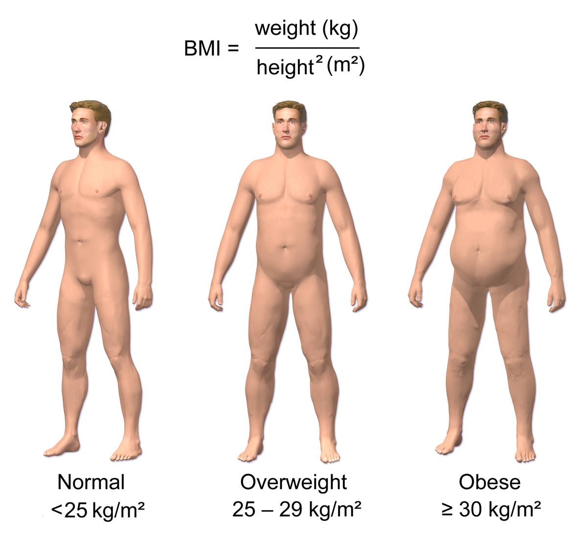

BMI (Body Mass Index) is a widely used and simple, method for estimating whether you are over- or under- normal weight.
It can give an indication of possible healt problems.

Figure 1: The figure illustrates the meaning of BMI-numbers. Img. from wikipedia
Background
Based on your BMI number, you can use the BMI-classification shown in the following table, to get an indication of you weight class.
Table 1: BMI Classification for Adults. From LEX lex.dk
BMI range
Weight Class
<18.5
under-weight
<18.5-25
normal-weight
<25-30
over-weight
> 30
obese
Remark, that can use this BMI classification for adults, both men and women. It does not apply to children and teenagers because the BMI scale here depends
on age and sex.
BMI is based on height and weight of your body. It is calculated by dividing you weight measured in kg divided by your height in meters squarred,
see Equation 1.
Equation 1: Computing BMI-number.
Alternative Methods
Body-fat contents:
You can buy a special apparatus that can measure the amount of fat, muscles, and bones in your body. It is also available in most fitness centres.
Waist line:
Measure the circumference of yuor waist line. This number is an indication of how much fat is on your stomack. This is typically unhealthy fat. Etc. Etc.
Waist-to-hip ratio:
Measure both you waist line and hip circumference. By dividing these numbers you get an indication of how your fat is distributed, e.g., pear vs. apple shaped.
And so on
...
Executing the BMI console application
The game is implemented in node.js and assumes that is installed. The game can be started from the command line by executing the command
command> node ./bmi-console.js
Then it will print out the scoreboard in the terminal, and generate a file "bmiStatus.html" that can be viewed in your favourite browser.